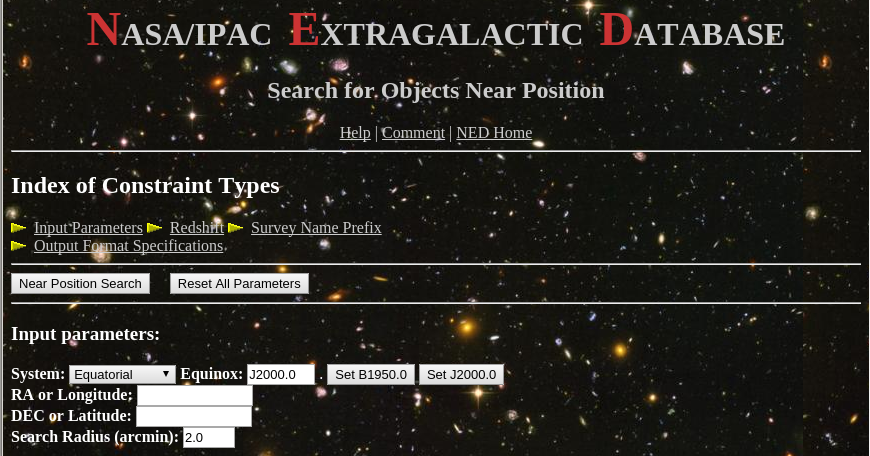
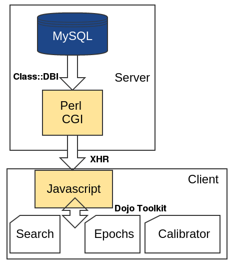
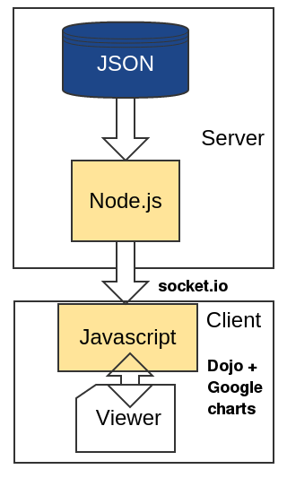

Constructing custom web-tools to facilitate data analysis
Jamie Stevens - ATCA Senior Systems Scientist / Lead Scientist
Why make a web interface?
Universal: all people on any machine can see them.
Faster: don't need to ship around big datasets.
Reliable: users always see the latest version.
Easy: interactive visualisation is easy in a web browser.
With large datasets, large teams and ongoing development, web interfaces are a logical choice.
What is a web interface?
Possibilities are essentially endless now with modern browsers. But we can break down the type of interface into two general categories: Static and Interactive.
Static Views
An interface that takes some user input on one page and uses that to make a new page.
Examples: NED, SIMBAD, ATCA Calibrator Database
Interactive Views
An interface that changes based on user input or model updates, but doesn't require the browser to load another page.
Examples: sky-map.org, Aladin Lite.
Spot the difference
Static views are useful for presenting detailed information about a catalogue/source and allow for "drill-down".
Interactive views are great for data exploration.
The two can be mixed of course!
What's this got to do with me?
ASKAP data is coming, and it is unreasonable to expect everyone to download it all and keep it (and the analysis software) up to date.
Web interfaces made by others may not be the way you want to visualise or present the data.
If you can imagine a way to make a more useful interface, there's a good chance you can make that happen!
OK! How do I do it?
Bad news: I can't tell you. Specificities due to the data you're using and the way you want to present it means you'll need to create something bespoke.
What follows is some general advice on how I make my interfaces.
Consider the Future
The data you're working with will likely change over time.
You're most likely going to want to change or tweak the way you look at the data.
You don't want to have to do a huge re-code every time you want to make a change to a view, or the data changes.
Consider developing using the MVC scheme.
Model - View - Controller

What do I need to learn?
View: HTML5 and CSS3 at a minimum, Javascript if you want to have interactivity.
Model/Controller: PHP/Perl/Python, SQL.
A lot to know, but numerous tools exist to make it easier.
Frameworks
Most frameworks allow you to program in Javascript to implement MVC. They have all the support code, and leave you to describe the data and make the views.
There are a ridiculous number to choose from! There is even the site todomvc.com to help you choose one.
Unless you think the same way as the framework creators, it can be a very steep learning curve.
Doing it all - by example
Two web interfaces that I've made that I've done in quite different ways.
The ATCA Calibrator Database
The ATCA Calibrator Database
The database is (unsuprisingly) for storage of the data.
Used the MySQL database since ATNF has a dedicated MySQL server for this purpose.
Other choices: PostgreSQL, flat files...
The ATCA Calibrator Database
Need some process on the server that can take requests from a client web browser, query the database, and return the results.
Used Perl and the CGI library for the browser interaction, along with the Class::DBI library to make the database queries easy. I know all these tools, so that's what I used.
Other choices: Python, PHP, Javascript...
The ATCA Calibrator Database
The views are made to be easy to use and nice to look at.
Used HTML5 and CSS3. All the view pages are plain HTML/CSS that load quickly and then start querying the database. This makes the site feel more responsive.
Other choices: generate HTML on-the-fly on the server (old-fashioned), REST-ful page generation
The ATCA Calibrator Database
Once the view page is loaded, the database needs to be queried and the page populated with the result.
This is done with Javascript. Unfortunately, different browsers still have slightly different APIs for many functions. I use the Dojo Toolkit to abstract all these differences away, and to make the charts that appear on the pages.
Communication between the client and server is done via standard XHR.
Other choices: straight Javascript, jQuery, mootools, D3...
Simple Spectra Viewer
Simple Spectra Viewer
Differences
I wanted to do something quickly; only took a day to make.
Only needed a single view but could view different datasets.
Wanted faster response to a potentially huge amount of queries to the model.
Summary
Web interfaces are "the way to go" with modern browser abilities.
Almost limitless possibilities for the interfaces, and a huge variety of software available to help you make them.
Requires a reasonable amount of effort to learn and implement, and knowing your requirements is essential.
If you know a language like Python or Perl, learning Javascript and HTML is easy!